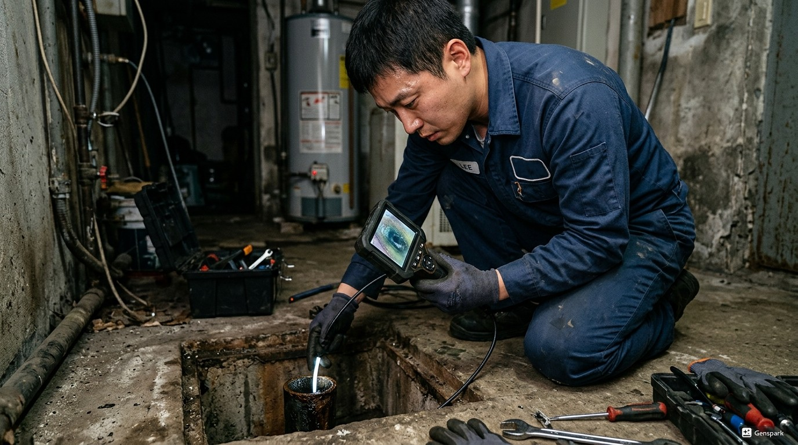
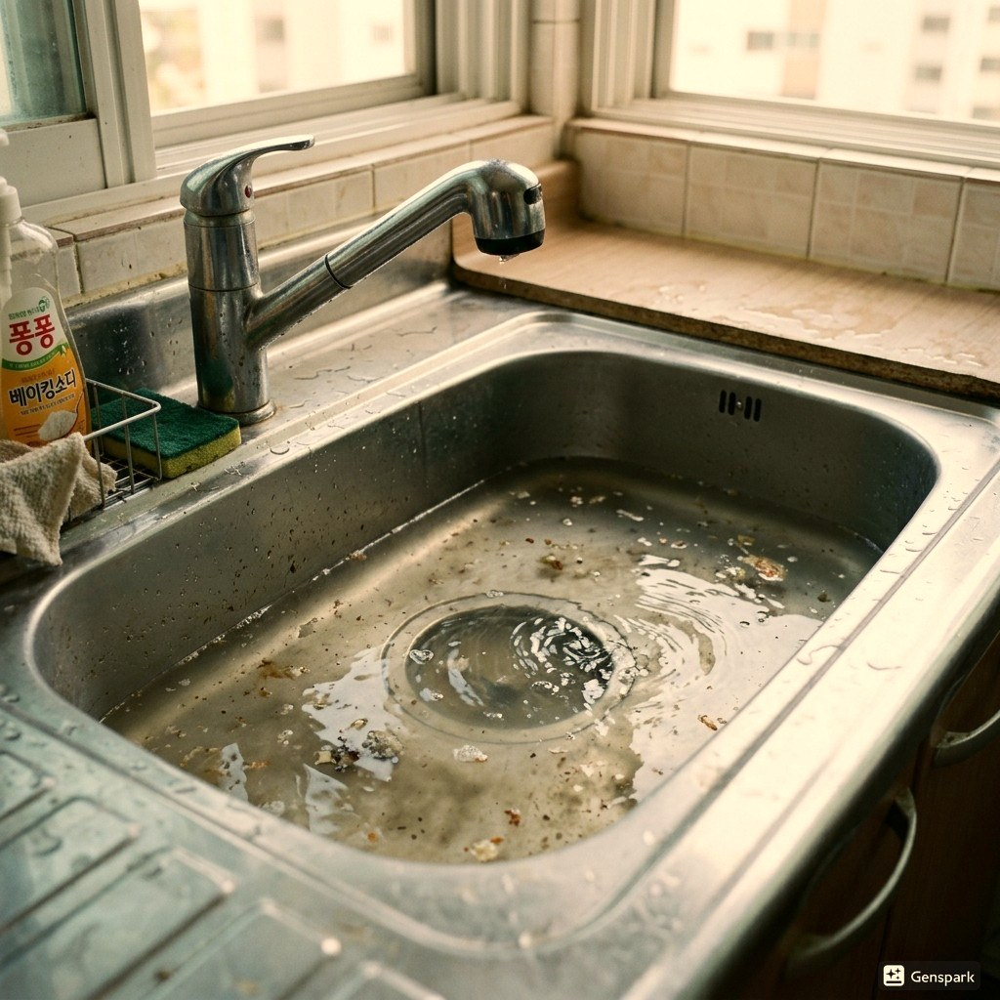
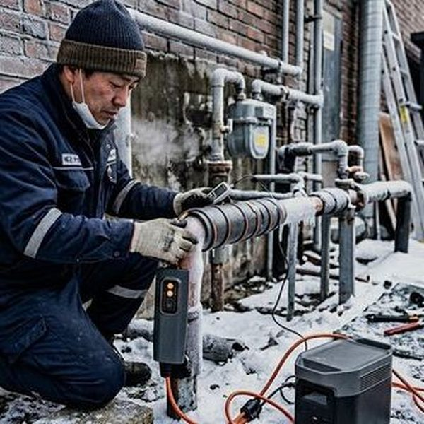

광주 지역의 하수구막힘은 주로 기름때, 음식물 찌꺼기, 머리카락, 이물질 등이 배관 내부에 축적되어 발생합니다. 특히 오래된 건물이 많은 경안동, 송정동, 오포읍 일대에서는 배관 노후화로 인한 막힘이 빈번합니다.
제우스시설관리는 관로 내시경 카메라로 막힘의 정확한 원인과 위치를 파악한 후, 드레인 기계와 고압세척기를 투입하여 완벽하게 해결합니다. 단순히 뚫는 것이 아니라 배관 내벽까지 깨끗하게 세척하여 재발을 방지합니다.

▲ 광주 현장에서 전문 장비로 하수구막힘 해결 작업 중
✅ 드레인 기계 - 스프링 와이어로 배관 내 이물질을 물리적으로 파쇄·제거
✅ 관로 내시경 카메라 - 배관 내부를 실시간 영상으로 확인하여 정확한 진단
✅ 고압세척기 - 최대 200bar 고압수로 배관 내벽 오염물 완벽 세척
✅ 관로탐지기 - 매설 배관의 위치와 깊이를 정확히 탐지

▲ 고압세척기를 이용한 배관 내부 청소 작업
광주 전 지역에 28분 내 출동합니다. 야간·주말·공휴일 추가 요금 없이 동일한 서비스를 제공합니다.
📞 전화 한 통이면 정확한 견적을 바로 안내해드립니다
현장 상황에 따라 비용이 달라지기 때문에,
전화 상담 시 증상만 말씀해주시면 예상 비용을 바로 안내드립니다.
✅ 출장비 무료 | ✅ 미해결시 비용 0원 | ✅ 추가 요금 없음

▲ 광주 배관작업 전문 장비 투입 작업 현장
20년 이상 현장 경험으로 어떤 복잡한 상황에서도 해결합니다. 광주 지역에서 하수구막힘 문제가 발생하면 전화 한 통으로 전문가가 출동합니다.
하수구막힘은 가장 흔한 배관 문제 중 하나로, 음식물 찌꺼기, 기름때, 머리카락, 이물질 등이 복합적으로 작용하여 발생합니다. 특히 오래된 건물에서는 배관 내부의 스케일(석회 침전물)이 관 지름을 좁혀 막힘이 더 자주 발생합니다.
제우스시설관리의 하수구막힘 해결 프로세스는 ①내시경 진단→②원인 파악→③드레인 기계 투입→④고압세척→⑤최종 점검의 5단계로 진행됩니다. 이 체계적인 접근 방식으로 재발률을 최소화합니다.
건물 유형: 30년 된 다세대 주택 | 지역: 광주
주방 하수구에서 물이 전혀 빠지지 않는 상태. 내시경 확인 결과, 배관 내부에 기름때와 음식물 찌꺼기가 15cm 이상 두껍게 축적. 드레인 기계로 1차 관통 후, 고압세척기(150bar)로 배관 전체 세척. 작업 시간 45분, 배수 정상 회복.
건물 유형: 10년 된 아파트 | 지역: 광주
세탁기 가동 시 배수가 제대로 되지 않아 물이 넘침. 배수관 내시경 확인 결과, 섬유질과 세제 찌꺼기가 배관 벽면에 축적. 고압세척으로 완전 제거, 작업 시간 30분.
A. 막힘 정도와 위치에 따라 다르지만, 기본 출장비 무료이며 작업 전 현장 견적을 정확히 안내합니다. 미해결 시 비용 0원 정책을 운영하고 있어 안심하실 수 있습니다.
A. 가정용 도구로 일시적 해소는 가능하지만, 근본 원인(배관 내 이물질 축적, 관 파손 등)을 해결하지 못하면 반복됩니다. 전문 장비(드레인 기계, 내시경 카메라)를 사용해야 정확한 진단과 완전한 해결이 가능합니다.
A. 네, 제우스시설관리는 24시간 365일 운영합니다. 야간, 주말, 공휴일에도 추가 요금 없이 동일한 서비스를 제공하며, 28분 내 현장 도착을 목표로 합니다.